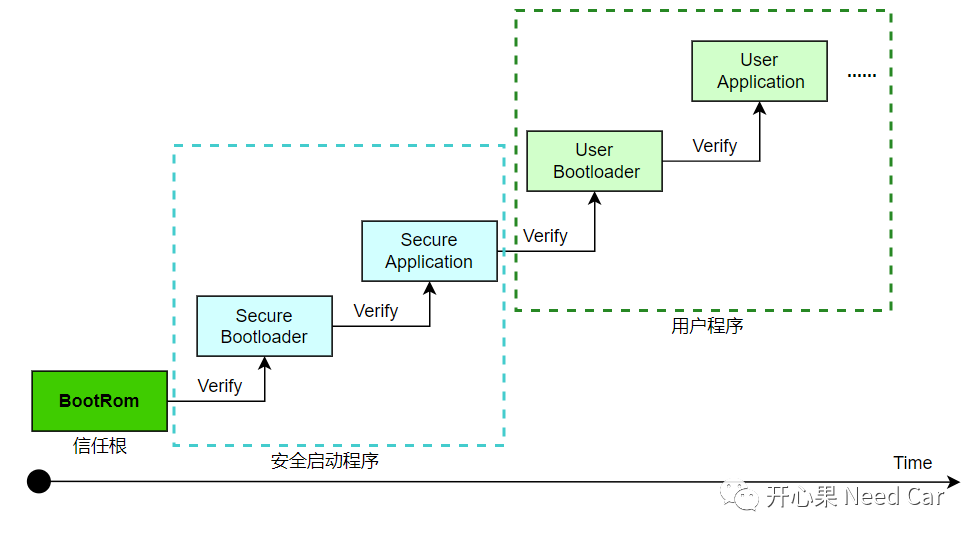
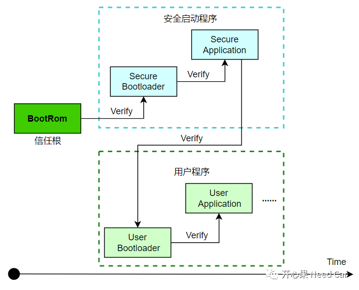
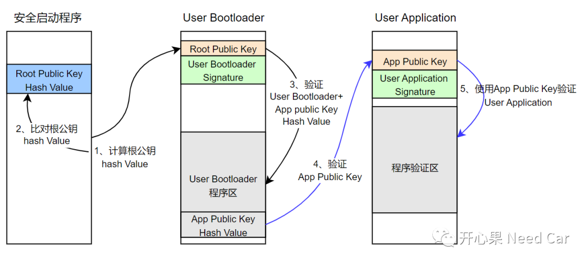

开心果 Need Car · 2023-12-21T08:35:00+08:00 · 微信原文
随着汽车智能化的发展，车辆已经成为万物互联的一部分。我们知道，不管何种终端设备，一旦联网，就存在着信息泄露的风险。自然，车辆也不例外，一旦车辆联网，那么，车辆就有被黑客或者第三方攻击、截获信息的风险。因此，车辆信息安全，已成为车企关注的焦点。本文，主要讨论MCU如何安全启动（Secure Boot），以及安全启动的信任链如何建立。
1、安全启动
（一）信任根
既然要安全启动，那么，启动总得有一个起点，而这个起点需要无条件信任，即：信任根。信任根必须具有不可攻破性，它可以是一段固化的程序或者硬件。以TC3xx为例，信任根是BootRom（也称为固件）。关于程序启动，可以参考前文《嵌入式开发：程序如何找到第一条指令位置？》。
（二）信任链
有了信任根以后，就可以从信任根开始，展开软件程序的逐级验证。工程中，常见的信任链验证方式如下：

如上图，从芯片加电开始，程序从信任根开始执行，逐级的验证下一级程序，只有每级程序验证通过才能启动下一级程序，以此确保每个程序是安全的、可信的。
一般来说，程序可分为"安全启动程序"和"用户程序"。两者的CPU可以使用相同的内核架构，也可以使用不同的内核架构。一般，两者属于核间通信（Inter-Processor Communication）。
如上安全启动方式有一个不足：由于采用逐级验证方式，启动时间过长。如果OEM（Original Equipment Manufacturer）有严苛的启动时间要求，则这个方案很可能不能满足要求。
所以，工程上的另一种安全启动方案："安全启动程序"和"用户程序"并行启动，如下所示：

2、验证内容及验证方法
（一）公钥存储
信任链的校验自然脱离不了密码学的方法论，而密码学又和密钥紧密关联。工程上，不管程序刷写还是程序启动，均需要使用公钥验签，所以，加强公钥的保护，至关重要。如果公钥被第三方识别和替换，那么，第三方即可通过配对的私钥伪造签名信息，进而"为所欲为"，信息安全也不复存在。
我们知道，在车辆下线时，OEM会在产线端分配根公钥（也就是产品公钥），产线刷写时，车辆不连接网络，也就不存在被网络攻击的风险，因此，根公钥的刷写是安全的（PS：不考虑异常断电场景）。一般来说，根公钥可以刷写到HSM专属的OTP（One Time Program）存储区，此区域，不允许Host端访问。如果根公钥对应的算法是RSA-2048、RSA-3072等，根公钥的长度较长，所以，工程上，常常存储根公钥的哈希值，通过校验根公钥的哈希值，确认根公钥的完整性。
（二）级联校验内容
级联校验内容及时序如下所示：

往期精彩回顾
工程问题：数据一致性被破坏，导致DMA CRC校验失败
以太网基础：为什么需要ICMP？
CANdelaStudio支持AUTOSAR DEM模块Event的描述